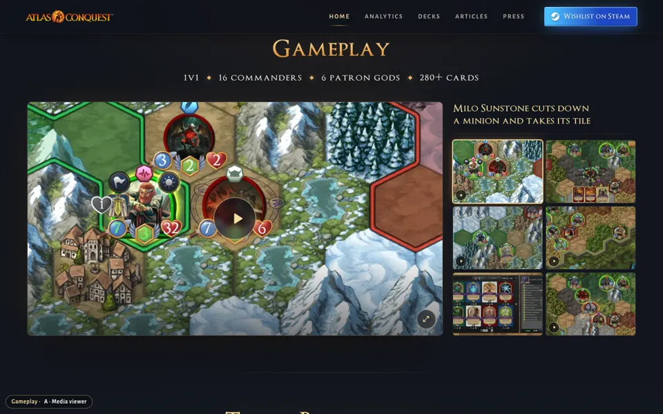
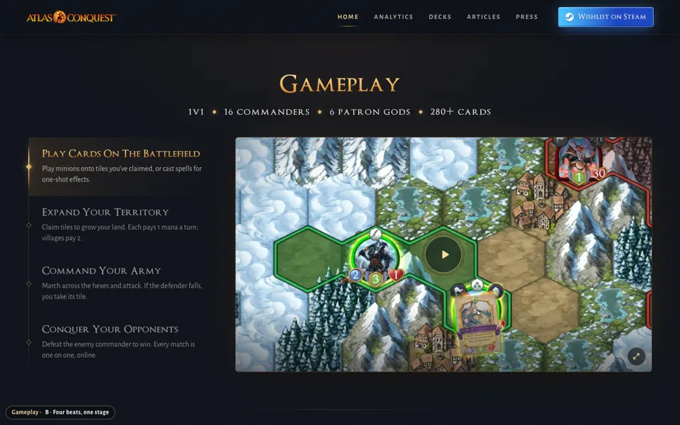
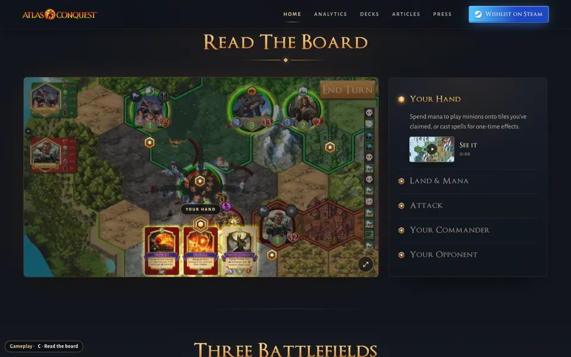
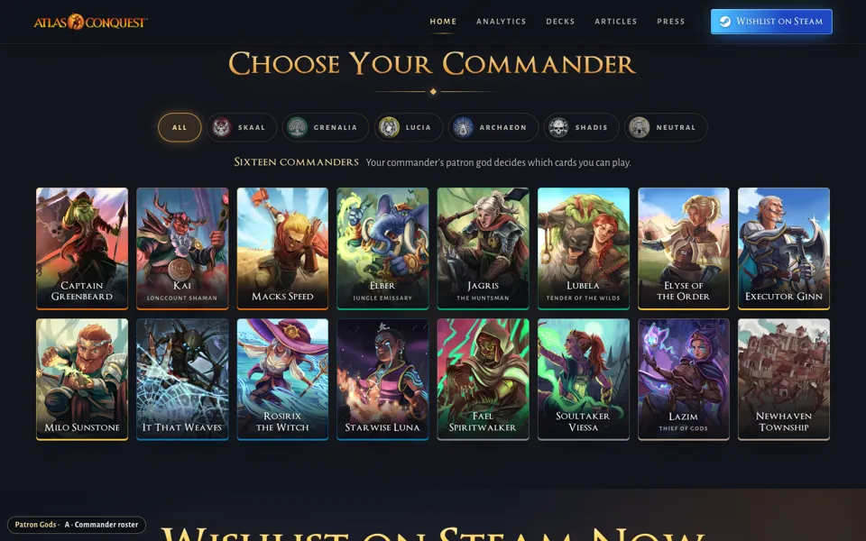
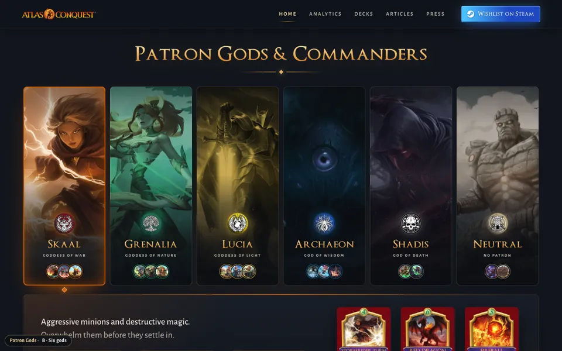
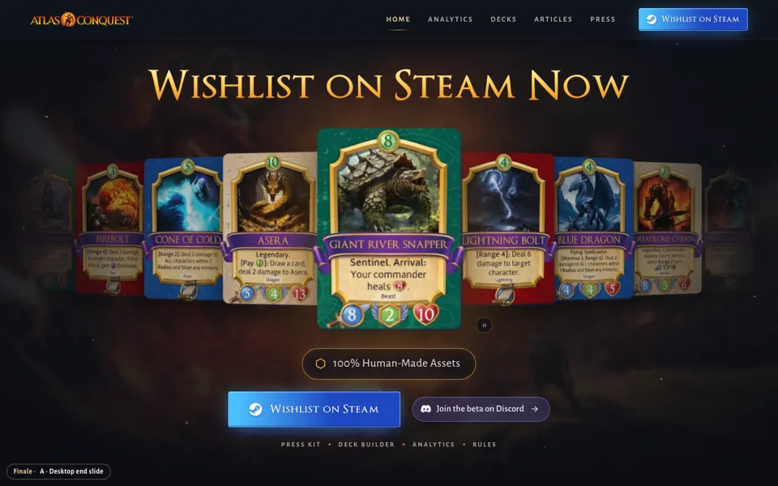
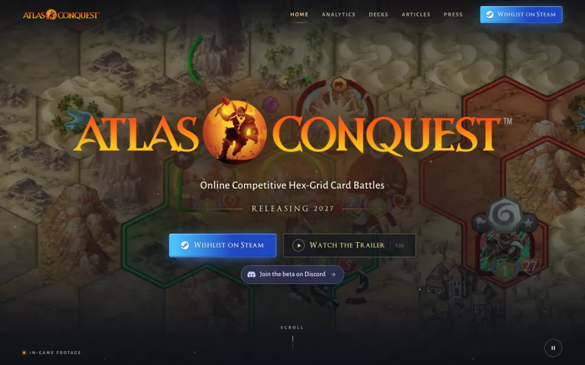
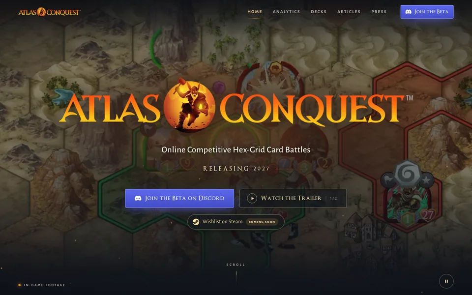
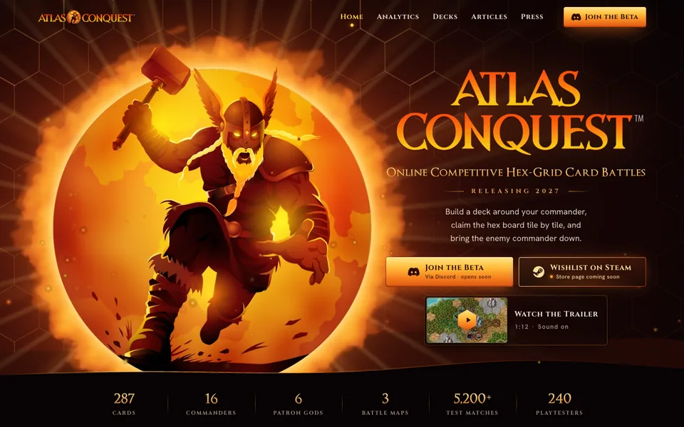
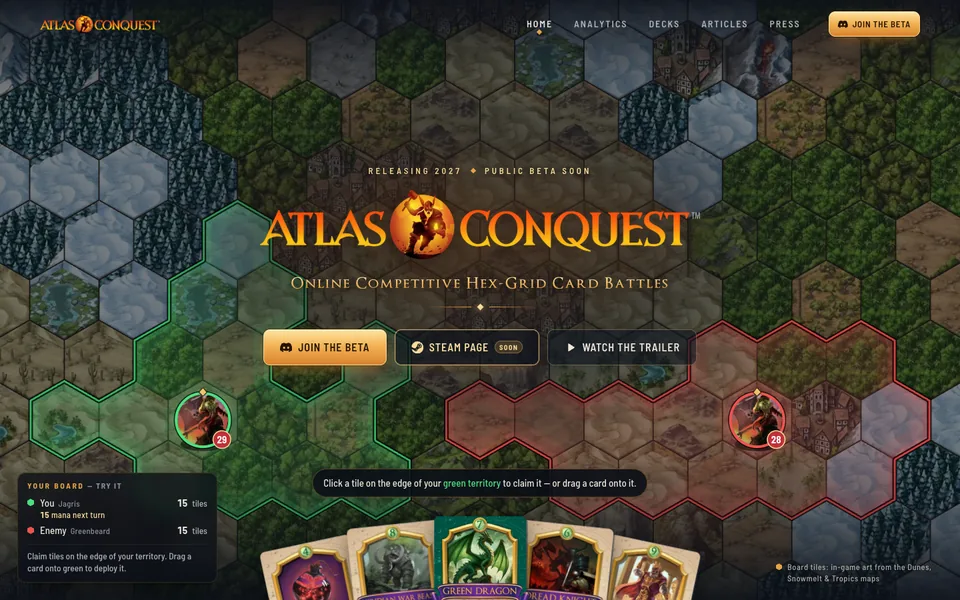

Archive
Earlier versions of the site and every homepage idea from the October 2026 refresh. Each one still runs, so we can compare them, borrow a piece, or bring one back.
The site before the refresh
The homepage and analytics as they were until October 2026, running on today’s live data.
Homepage: the version we shipped
Layout D, the source of the live homepage, plus the copy saved just before its last round of changes.
Homepage section options
Alternatives we built for single sections, each shown inside the full page.

Gameplay AMedia viewer
One big stage with a strip of clips and screenshots, Steam-store style.

Gameplay BFour beats, one stage
Play, Expand, Command, Conquer beside one big player.

Gameplay CRead the board
A real match screenshot with markers that explain the rules.

Gods AChoose Your Commander
All 16 commanders as art tiles, filtered by patron god.

Gods BSix gods
Tall god panels made from each faction’s key art.

FinaleDesktop end slide
The finale pass that shipped, on the earlier page.
Earlier homepage directions
Round one and the three Trailer Cut layouts. These have more motion and longer pages.

Layout ACinematic Chapters
Gold title cards hand off to big gameplay clips as you scroll.
Layout BFull-Bleed Reel
Every beat plays full screen, titles only.
Layout CFilmstrip & Sun
A filmstrip of beats and the molten-sun Atlas behind the finale.

Round 1Trailer Cut (original)
The first version the layouts grew from.

Round 1Molten Sun
Poster style, built from the Steam capsule art.

Round 1Living Board
The homepage as an interactive hex board.
Footage and review pages
Raw material and the pages we used to review it.